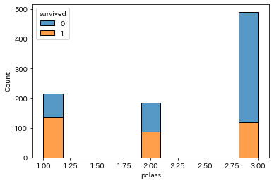
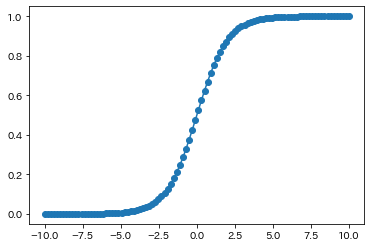
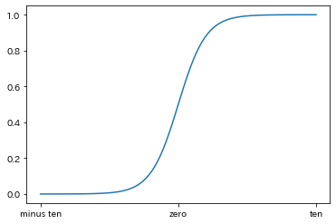
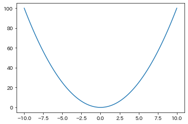
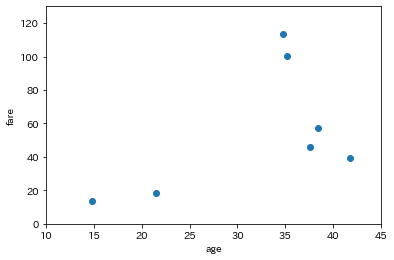

Pythonでデータの可視化をしていく場合に使うライブラリがmatplotlibです。
Pythonでグラフを描画（plotするという）することができます。
MATLABという数値解析ソフトウェアに仕様が似ているようです。
GoogleColabやJupyter Labといった環境下では、最初から入っているため改めて入れる必要はありません。
自分で入れる場合はconda install matplotlibやpip install matplotlibという記述をします。
matplotlibをimportする際、pltとするのが一般的です。
import matplotlib.pyplot as plt #「pyplot」というモジュールをimportすることが多い
import numpy as np # 同時にnumpyをimport
import pandas as pd # 同時にpandasもimport
import seaborn as sns # 同時にSeabornもimport
# 日本語を利用するためにimport
!pip install japanize-matplotlib
import japanize_matplotlib
plt.plot() 関数に、横軸→縦軸 の順で渡すとplotすることができます。
x = [0,1,2,3,4,5]
y = [10,11,12,13,14,15]
plt.plot(x,y) #「y=x+10」のグラフを記述

yの部分を数式を使って記述しましょう。
x = [0,1,2,3,4,5]
y = np.array(x) + 10 # ndarrayにしてからでないと演算できない
plt.plot(x,y) #「y=x+10」のグラフを記述
ここでは、AIの分野でよく登場する シグモイド関数についてplotしてみましょう。

シグモイド関数の意味は、ある入力に対する出力を0～1の範囲に抑えることにあります。
# シグモイド関数のplot
x = np.linspace(-10 , 10 , 100)
z = 1 / (1 + np.exp(-x))
plt.plot(x,z)

このような数式のグラフを表示する際は、linspace を横軸に使うことが多いようです。
次はDataFrameを使ってplotしてみましょう。
# カラムxの値を横軸、カラムyの値を縦軸にしたグラフのplot
df = pd.DataFrame({"x" : [1,2,3,4,5,],
"y" : [1,32,243,1024,3125]})
plt.plot("x","y" , data=df) # 引数dataにDataFrameを渡してあげる
引数を与えることで、様々なパターンでplotすることができます。
# シグモイド関数のplot
x = np.linspace(-10 , 10 , 100)
z = 1 / (1 + np.exp(-x))
plt.plot(x,z)

グラフの線の色を変更することができます。
※こちらのページにより詳しい解説が書いてあります。
plt.plot(x,z , color = "blue")

「line width」の略です。線の太さを変更します。
plt.plot(x,z , lw = 5)
「line style」の略です。線の種類を変更します。
例：'-','--'
plt.plot(x, z, ls = "--")
マーカーの種類を指定します。
例：'o','x'
plt.plot(x,z , marker = "o")

マーカーの大きさを指定します。
plt.plot(x,z ,
marker = "o" ,
markersize = 3)
マーカーの色を指定することができます。
plt.plot(x,z ,
marker = "o" ,
markerfacecolor = "yellow")
マーカーの枠の色を指定します。
plt.plot(x,z ,
marker = "o" ,
markerfacecolor = "yellow" ,
markeredgecolor = "red")

マーカーの枠の太さを指定します。
plt.plot(x,z ,
marker = "o" ,
markerfacecolor = "yellow" ,
markeredgecolor = "red" ,
markeredgewidth = 3)
plotの透明度を0から1の間で指定します。0に近いほど透明度が上がります。
plt.plot(x,z ,
alpha = 0.3)
plotする際に様々な付属情報を付けたり消したりすることができます。
plt.xlabel() : x軸にラベルを付けるplt.ylabel() : y軸にラベルを付けるplt.title() : 図にラベルを付けるplt.plot(label = "ラベル") : プロットにラベルを付けるplt.legend() : 凡例を付けるplt.plot(x,z, label="sigmoid")
plt.xlabel("x")
plt.ylabel("y")
plt.title("sigmoid(x)")
plt.legend(loc="best") # locの値を変更すると、凡例の位置を移動できる
plt.legend()の中では、loc というパラメータを使って凡例の位置を決めることができます。
以下の表を参考にしてください。基本的には best を使います。

plt.xlim(最小値,最大値) : x軸の最大値・最小値を指定するplt.ylim(最小値,最大値) : y軸の最大値・最小値を指定するplt.xticks() : x軸に任意のticksを付けるplt.yticks() : y軸に任意のticksを付けるplt.axis("off") : 軸を消す※ticks：目盛り
plt.plot(x,z , label="sigmoid")
plt.xlabel("x")
plt.ylabel("y")
plt.title("sigmoid(x)")
plt.legend(loc="best") # locの値を変更すると、凡例の位置を移動できる
plt.xlim(-10,10)
plt.ylim(0,1)
plt.xticks([-5,0,5] , rotation=20) # rotationの値を変更すると、メモリの角度を変更することができる
plt.yticks([0,0.5,1] , rotation=20)
plt.xticks(),plt.yticks()の中では、rotation というパラメータを使って
目盛りの角度を指定することができます。
目盛りが長い文字列であるときなどに、被らないように表示できるため使えます。
ticks()には、主に4つの使い方があります。
ここではxticks()について触れますが、yticks()でも同じです。
表示したいメモリ値をリストで与えて指定することができます。
値のリストは等間隔で指定する必要はありません。
plt.plot(x,z)
plt.xticks([-10,-2.5,0,2.5,10])

np.arange()で生成したndarrayを与えることもできます。
plt.plot(x,z)
plt.xticks(np.arange(-10,11,2.5))

目盛り値に文字列を指定することもできます。
plt.plot(x,z)
plt.xticks([-10,0,10] , ["minus ten" , "zero" , "ten"])

空のリストを渡すと、軸目盛を非表示にすることができます。
plt.plot(x,z)
plt.xticks([])
plt.yticks([])
こちらのページでは軸周りについて詳細な解説があります。
複数plotするには、単にもう1つ plt.plot() を実行するだけです。
x = np.linspace(-10 , 10 , 20)
y = np.linspace(0,1,20)
z = 1 / (1 + np.exp(-x))
plt.plot(x,y , label="normal")
plt.plot(x,z , label="sigmoid")
plt.axis("off") #軸を消す
plt.legend()
複数のグラフを並べて表示することができます。
ここでは「オブジェクト指向」というPythonの考え方が登場します。
以下の2次関数と3次関数のグラフを並べて表示しましょう。
x = np.linspace(-10,10,100)
plt.plot(x,x**2) # y=x^2のグラフ

x = np.linspace(-10,10,100)
plt.plot(x,x**3) # y=x^3のグラフ
plt.plot()の前で plt.subplot(row,column,index) を実行すると、
row × column の箱が確保され、index番目にplotされます。
x = np.linspace(-10,10,100)
plt.subplot(1,2,1) # 1番目に2次関数のグラフ
plt.plot(x,x**2)
plt.subplot(1,2,2) # 2番目に3次関数のグラフ
plt.plot(x,x**3)
plt.subplots_adjust() とすると、グラフ間に余白を持たせることができます。
左右の余白を引数 wspace、上下の余白を hspace で指定します。
x = np.linspace(-10,10,100)
plt.subplot(1,2,1) # 1番目に2次関数のグラフ
plt.plot(x,x**2)
plt.subplot(1,2,2) # 2番目に3次関数のグラフ
plt.plot(x,x**3)
plt.subplots_adjust(wspace=0.4, hspace=0.6)

ここではオブジェクト指向という考え方が登場します。
# plt.figureクラスでfigというインスタンスを作る
fig = plt.figure()
<Figure size 432x288 with 0 Axes>
add_subplot()というメソッドを利用してplotを追加し、
axes（座標軸）オブジェクトを複数作っていきます。
そのaxesオブジェクトに対してplot()関数を呼び出します。
fig = plt.figure()
ax1 = fig.add_subplot(1,2,1)
ax2 = fig.add_subplot(1,2,2)
x = np.linspace(-10,10,100)
ax1.plot(x,x**2)
ax2.plot(x,x**3)
plt.subplots_adjust(wspace=0.4, hspace=0.6)
こちらのサイトを見ていただくとイメージが湧くと思います。
インスタンスfigとaxesを同時に作ることができます。
先ほどの方法よりもこちらの方が便利です。
fig , axes = plt.subplots(nrows=1 , ncols=2) # 1行2列のplots
plt.subplots_adjust(wspace=0.4, hspace=0.6)

axesはndarrayで返ってきているので、インデックスを指定してplotしてみましょう。
fig , axes = plt.subplots(nrows=1 , ncols=2)
x = np.linspace(-10,10,100)
axes[0].plot(x,x**2)
axes[1].plot(x,x**3)
plt.subplots_adjust(wspace=0.4, hspace=0.6)

複数行を指定した場合は、インデックスを指定する際に注意が必要です。
fig , axes = plt.subplots(nrows=2 , ncols=2)
x = np.linspace(-10,10,100)
axes[0,0].plot(x,x)
axes[0,1].plot(x,x**2)
axes[1,0].plot(x,x**3)
axes[1,1].plot(x,x**4)
plt.subplots_adjust(wspace=0.4, hspace=0.6)
tight_layput()というメソッドを使えば、レイアウトがスッキリします。
fig , axes = plt.subplots(nrows=2 , ncols=2)
x = np.linspace(-10,10,100)
axes[0,0].plot(x,x)
axes[0,1].plot(x,x**2)
axes[1,0].plot(x,x**3)
axes[1,1].plot(x,x**4)
fig.tight_layout()
1つのプロットの際は、引数に何も指定しないことでplotできます。
x = np.linspace(-10 , 10 , 100)
z = 1 / (1 + np.exp(-x))
fig , axes = plt.subplots()
axes.plot(x,z)
オブジェクト指向では基本 ax.set_xx() という形で、同様に付属情報を付けることができます。
ただし、legend()とaxis('off')はそのままです。
x = np.linspace(-10 , 10 , 100)
z = 1 / (1 + np.exp(-x))
fig , axes = plt.subplots(1,2)
plt.suptitle("Sigmoid") # 全体のタイトル
axes[0].plot(x,z)
axes[0].axis("off") # そのままなので注意
axes[1].plot(x,z , label="sigmoid")
axes[1].set_xlabel("x")
axes[1].set_ylabel("y")
axes[1].set_title("sigmoid(x)")
axes[1].legend(loc="best") # そのままなので注意
axes[1].set_xlim(-10,10)
axes[1].set_ylim(0,1)
axes[1].set_xticks([-5,0,5])
axes[1].set_yticks([0,0.5,1])
以下のようにすると2つのグラフで共通の軸名を指定できます。
x = np.linspace(-10 , 10 , 100)
z = 1 / (1 + np.exp(-x))
fig , axes = plt.subplots(1,2)
fig.text(0.5, 0, 'x common label', ha='center', va='center', fontsize=12)
fig.text(0, 0.5, 'y comonn label', ha='center', va='center',
rotation='vertical', fontsize=12)
plt.suptitle("Sigmoid") # 全体のタイトル
axes[0].plot(x,z)
axes[0].axis("off") # そのままなので注意
axes[1].plot(x,z , label="sigmoid")
axes[1].set_xlabel("x")
axes[1].set_ylabel("y")
axes[1].set_title("sigmoid(x)")
axes[1].legend(loc="best") # そのままなので注意
axes[1].set_xlim(-10,10)
axes[1].set_ylim(0,1)
axes[1].set_xticks([-5,0,5])
axes[1].set_yticks([0,0.5,1])
こちらのサイトで細かいレイアウトの調節方法の紹介がありますので、興味のある方は是非。
これまで書いてきた数式のグラフよりも、これから説明するグラフの方がplotする機会が多いです。
その中でも1番使う頻度が高いのが散布図です。
データを点でプロットしたもので、データの全体的なばらつきや傾向を見ることができます。
df = sns.load_dataset('titanic')
df.head(3)
散布図を作るには plt.scatter() 関数を使います。
今回は、age（年齢）カラムとfare（料金）カラムを指定します。
# x軸がageカラム、y軸がfareカラム
plt.scatter(df["age"] , df["fare"])
プロットが重なるとデータの解釈が難しくなるので、
alphaを指定して透明度を上げ、データの重なり具合を明らかにします。
plt.scatter(df["age"] , df["fare"] ,alpha=0.2)
バブルチャートは、各プロットの特徴量を視覚的に表現するグラフの1つです。
特徴量に応じてプロットのサイズや色を変化させることで、
データの意味を直観的に読み取りやすくすることができます。
今回はdeck（デッキ）カラムでグループ化した後にageとfareの平均値をとります。
その後survivedカラムの値によってマーカーの大きさを変化させます。
df.groupby("deck").mean()
groupbyをして平均値を取るために必要なのはageとfare、
そしてマーカーの大きさを表すsurvivedの3つです。
survivedをそのまま使うと値が小さいため、
値を1000倍したsurvived_thousandというカラムを追加します。
df["survived_thousand"] =df["survived"]*1000
df["age"] = df["age"].fillna(df["age"].mean()) # 欠損値は平均値で置き換え
survived_group_df = df.groupby("deck").mean()[["age","fare","survived_thousand"]]
plt.xlabel("age")
plt.ylabel("fare")
plt.xlim(10,45)
plt.ylim(0,130)
plt.scatter("age" , "fare" , data=survived_group_df)

この状態だと、各グループの平均値がplotされています。
ここからまず、マーカーの大きさをsurvived_hundredの値に応じて変化させます。
引数 s を指定します。
plt.xlabel("age")
plt.ylabel("fare")
plt.xlim(10,45)
plt.ylim(0,130)
plt.scatter("age" , "fare" , s="survived_thousand", data=survived_group_df)

引数 c を指定することで、マーカーの色を割り振ることができます。
matplotlibには、数字を指定することで、数字ごとに色を変えるという機能があります。
これを使っていきましょう。
c = np.arange(len(survived_group_df))
plt.xlabel("age")
plt.ylabel("fare")
plt.xlim(10,45)
plt.ylim(0,130)
plt.scatter("age" , "fare" , s="survived_thousand", c=c , data=survived_group_df)
このままだと各マーカーがどのグループを表しているか分からないので、テキストを挿入します。
テキストをplotするには plt.annotate() という関数を使います。
挿入するテキストの指定後、タプルで挿入する座標を指定します。
c = np.arange(len(survived_group_df))
plt.xlabel("age")
plt.ylabel("fare")
plt.xlim(10,45)
plt.ylim(0,130)
plt.scatter("age" , "fare" , s="survived_thousand", c=c , data=survived_group_df)
plt.annotate("hello" , (40,100)) # 図の右上に「hello」というテキストをplot

survived_group_df = df.groupby("deck").mean()[["age","fare","survived_thousand"]]
c = np.arange(len(survived_group_df))
plt.xlabel("age")
plt.ylabel("fare")
plt.xlim(10,45)
plt.ylim(0,130)
plt.scatter("age" , "fare" , s="survived_thousand", c=c , data=survived_group_df)
for idx, row in survived_group_df.iterrows():
plt.annotate(idx, (row['age']-3, row['fare']-3) ,size = 12)
plt.xlabel('age')
plt.ylabel('fare')
今回はマーカーの大きさがほとんど変わらなかったですが、
この大きさが変わるとより分かりやすくなるはずです。
連続データをいくつかのグループに分け、
そのグループにデータがどれだけあるかを棒状で表したグラフをヒストグラムといいます。
縦軸は度数（データの個数）、横軸は階級（データの区間）です。
階級は特にbinとも呼ばれます。
df = sns.load_dataset('titanic')
df.head(3)
ヒストグラムを作るには plt.hist() 関数を使います。
今回は、ageカラムのデータをヒストグラム化します。
plt.hist(df["age"] )
plt.show() # 書くことで戻り値を省略可能
引数 bins を指定すると、区間の個数を指定することができます。
デフォルトは10個です。
plt.hist(df["age"], bins=8)
plt.show()
引数 range を指定すると、ヒストグラムに使用するデータの範囲を指定することができます。
range(最小値,最大値)の形になります。
デフォルトではデータの最小値・最大値が使用されています。
plt.hist(df["age"] ,bins=8,range=(10,50))
plt.show()
ヒストグラムについてさらに学びたい方は、こちらが参考になると思います。
特に横軸を対数に設定する方法については、今後使う場面があるかもしれません。
連続データを対象にしているヒストグラムとは対照的に、
カテゴリー別のデータを比較し、棒の高さでデータの大小を表したグラフを
棒グラフといいます。
df = sns.load_dataset('titanic')
df.head(3)
pclass（客室等級）カラムに対しての、
男性・女性・子供の数を見てみましょう。
chi = lambda passenger : "child" if passenger[0] < 16 else passenger[1]
df["age"] = df["age"].fillna(df["age"].mean())
df["person"] = df[["age","sex"]].apply(chi , axis=1)
df[["age","sex","person"]][7:10]
# クロス集計表の作成
cross_df = pd.crosstab(df["pclass"],df["person"])
cross_df
| age | sex | person | |
|---|---|---|---|
| 7 | 2.0 | male | child |
| 8 | 27.0 | female | female |
| 9 | 14.0 | female | child |
棒グラフを作るには plt.bar() 関数を使います。
# 客室等級に対しての男性の数
plt.bar(cross_df.index , cross_df["male"])
plt.xticks([1,2,3])
plt.show()
複数描画してみましょう。
plt.bar(cross_df.index-0.3 , cross_df["male"], width=0.3, label='男性')
plt.bar(cross_df.index , cross_df["female"], width=0.3, label='女性')
plt.bar(cross_df.index+0.3 , cross_df["child"], width=0.3, label='子供')
plt.xticks([1,2,3])
plt.legend(loc="best")
plt.show()
次はグラフを積み立てていきます。
bottom = np.zeros_like(cross_df.index)
for name in cross_df.columns:
plt.bar(cross_df.index , cross_df[name], label=name , bottom=bottom)
bottom += cross_df[name]
plt.xticks([1,2,3])
plt.legend(loc="best")
plt.show()
割合を分かりやすくしたいので、100%積み上げ縦棒グラフに変更します。
cross2_df = pd.crosstab(df["pclass"],df["person"], normalize='index')
cross2_df
| person | child | female | male |
|---|---|---|---|
| pclass | |||
| 1 | 0.027778 | 0.421296 | 0.550926 |
| 2 | 0.103261 | 0.358696 | 0.538043 |
| 3 | 0.118126 | 0.232179 | 0.649695 |
cross2_df.plot.bar(stacked=True)
棒グラフについてさらに学びたい方は、こちらが参考になると思います。
特に積み上げ棒グラフは結構使うと思います。
箱ひげ図(box plot)とは、データの分布を「箱」と「ひげ」で表したグラフです。
データの集まり方を一目で捉えることができます。
箱ひげ図についてよく分からない方は、こちら のサイトを見ていただければと思います。
df = sns.load_dataset('titanic')
df.head(3)
箱ひげ図を作るには plt.boxplot() 関数を使います。
今回は、pclass（客室等級）カラムに対しての年齢層の分布を見てみましょう。
df["age"] = df["age"].fillna(df["age"].mean())
data = []
for i in df["pclass"].unique():
data.append(df[df["pclass"]==i]["age"])
plt.boxplot(tuple(data), whis="range") # 引数を指定して外れ値計算をしないよう指定
plt.show()
ここまでで学習してきたplotは、他の人と共有するときなどは基本的にファイルに保存します。
シグモイド関数をplotして、サイズを調整してみましょう。
# シグモイド関数のplot
x = np.linspace(-10 , 10 , 100)
z = 1 / (1 + np.exp(-x))
plt.plot(x,z)

plt.figure() という関数の中で、引数 figsize に（横幅 , 高さ）をインチ数で指定します。
plt.figure(figsize=(1,1))
plt.plot(x,z)

オブジェクト指向を使ってサイズを調整することもできます。
fig , axes = plt.subplots(figsize=(1,1))
axes.plot(x,z)
一番使う手法です。
figureオブジェクトの savefig() 関数を呼び出し、
引数にファイル名を指定することで保存できます。
fig , axes = plt.subplots()
axes.plot(x,z)
axes.set_xlabel("x")
axes.set_ylabel("y")
axes.set_title("sigmoid(x)")
fig.savefig("sigmoid_sample.png")
pngで保存するときは通常、グラフのタイトルや軸のラベルをつけて保存します。
保存されたかどうか、「ファイル」から確認してみてください。
まとめて1つのファイルとして保存したいときはpdfで保存しましょう。
新しいモジュールを使用します。
from matplotlib.backends.backend_pdf import PdfPages
これでPdfPagesクラスを使えるようになります。
PdfPages() にpdfのファイル名を入れて、pdfというインスタンスを作成します。
pdf = PdfPages("sigmoid_sample.pdf")
このインスタンスを使って、保存していきます。
pdf.savefig() に、figureオブジェクトを入れるだけです。
fig , axes = plt.subplots()
axes.plot(x,z)
axes.set_xlabel("x")
axes.set_ylabel("y")
axes.set_title("sigmoid(x)")
pdf.savefig(fig)
pdf.close() # pdfの更新を防ぐために実行

pdfで保存することの最大の利点は、大量のグラフを1つのファイルで保存できることです。
for文でfigureをループさせます。
pdf = PdfPages("sigmoid_sample.pdf")
for i in range(5):
fig , axes = plt.subplots()
axes.plot(x,x**i)
axes.set_xlabel("x")
axes.set_ylabel("y")
axes.set_title("y=x^{}".format(i))
pdf.savefig(fig) # forループの中で保存
pdf.close() # ループ後に閉じる
1ページに1グラフがplotされていることが確認できたでしょうか。
また、「ctrl+F」を利用することもできます。